Log-log Plot
Contents
Assuming that you already wrote a functional m-file called planck.m, which takes 2 input parameters (wavelength 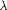 and temperature 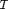) and output the intensity (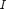). Now, let's plot the Planck function vs. wavelength, and see how the curve varies with different temperature.
Remember to set the temperature in Kelvin:
T = 5.7e3;
Here we choose the effective Black Body temperature of the Sun, 5700K.
Why log-log plot?
In astronomy, we are interested in a wide range of wavelengths, say, 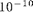 to 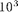 m. To plot the Planck Function as a function of wavelength in this range, first we create a "wavelength vector" using this range:
LinearLam = linspace(1e-10, 1e3, 100);
In case you don't remember, linspace(low, high, N) creates a vector from low to high with N elements equally spaced.
Now you can call the function planck.m and get the intensity as a function of wavelength:
LinearI = planck(LinearLam,T);
Then we can make the plot:
figure(1); clf; plot(LinearLam, LinearI, 'b.') xlabel('wavelength (m)') ylabel('Intensity (W / m / sr / m^2)') title('Planck Function')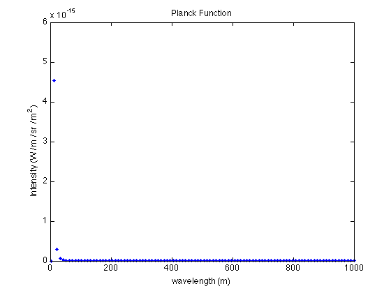
Since this is a large range of numbers (in both x- and y-directions), no structure can be observed in the linearly-spaced plot.
Log-log plot
This is the reason to use log-log plot: when you are handling numbers with a wide range.
The function loglog() is similar to plot(), but it plots the data on a grid log spaced in both x and y:
figure(1); clf; loglog(LinearLam, LinearI, 'b.') xlabel('wavelength (m)') ylabel('Intensity (W / m / sr / m^2)') title('Planck Function')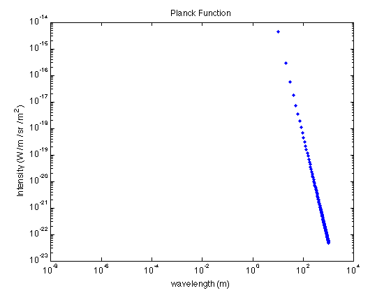
The plot looks much better, but there's still a problem: When we use linspace, most of the elements in the vector are on the high-end of the range. If you check the vector LinearLam, except the first element (), all elements are around . Therefore, we are missing structure for the low-end.
Log-space
The solution is to use logspace instead of linspace. Similar to linspace, logspace(low, high, N) creates a vector, from 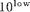 to 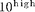, with N elements distributed equally in the log space
Lam = logspace(-10, 3, 100); Intensity = planck(Lam, T);
The Planck function now looks much better:
figure(1); clf; loglog(Lam, Intensity, 'b.') xlabel('wavelength (m)') ylabel('Intensity (W / m / sr / m^2)') title('Planck Function')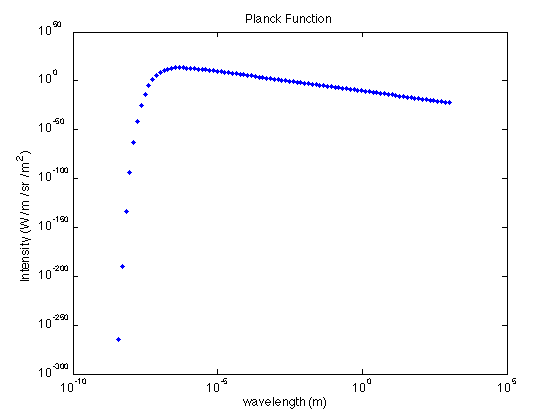
Sometimes we would like to focus on part of our plots to investigate the structure. You can use xlim and ylim to set which part of the parameter space you want to plot. For example, if we want to focus on the part with maximum intensity:
ylim([1e-15 1e15])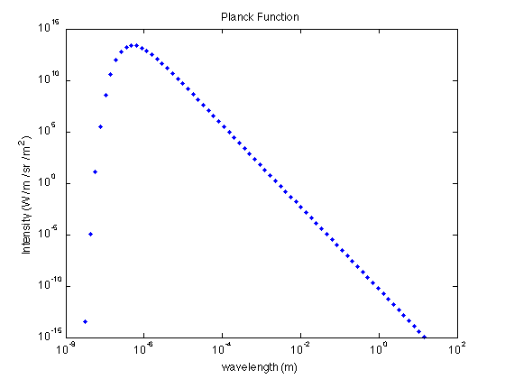
The syntax of xlim is similar: xlim([min max]).